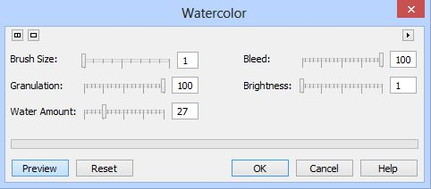
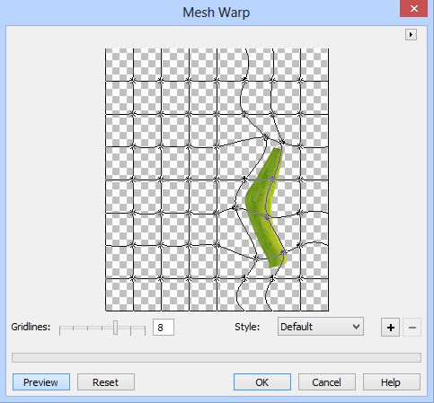

Рисуем куст в Photo-Paint
Этот урок пожалуй самый сложный из всех предыдущих, т. к. требует НУ ОЧЕНЬ большой усидчивости и терпения. Надеюсь он будет полезен и новичкам, а некоторые моменты и более опытным пользователям. Меня сподвигла на этот урок одна тема по Photoshop. Я решил что-то такое же наваять в Photo-Paint, тем более что пришлось это делать совсем по-другому. И хотя судя по описанию, в Photoshop это делается легко (в чем я немного сомневаюсь), то в Photo-Paint пришлось повозиться изрядно, пока я подобрал все необходимые фильтры, настроил инструменты и добился нужной формы листьев, цветка и всего остального.
1. Создайте новый документ размером 1200 х 1400 px и разрешением 150 dpi. Цвет фона не имеет значения.
2. Нажимаем клавишу F, чтобы вызвать инструмент Fill (Заливка). На Панели свойств последовательно щелкаем на кнопках Fountain (Фонтанная) и Edit fill (Изменить заливку). В диалоговом окне Fountain Fill (Фонтанная заливка) сделайте настройки, как на рис. 1.
В указателе цвета From (От) установите цвет 70 % черного, а в указателе цвета To (К) – черный цвет. Залейте теперь фон.
3. Создаем заготовку листа. Выберите инструмент Rectangle tool (Прямоугольник), нажав клавишу F6. На Панели свойств инструмента, в счетчике Outline width (Толщина абриса) установите значение равное 0, а в счетчике Corner Size (Размер угла) – 0. Цвет заливки не имеет значения, т. к. мы сейчас зальем его своим вариантом заливки. Нарисуйте прямоугольник, размер не имеет принципиального значения, мы сможем подправить размеры на следующих шагах. Я, например, нарисовал прямоугольник размером 126 х 602 px.
4. Нажмите Ctrl + M, чтобы создать из прямоугольника маску. Нажмите G, чтобы активировать инструмент Interactive Fill (Интерактивная заливка). На Панели свойств в списке Fill type (Тип заливки) выберите тип заливки Linear. Начальный цвет заливки: R = 67; G = 106; B = 17. Конечный цвет заливки: R = 127; G = 152; B = 27. Залейте прямоугольник (рис. 2). Обратите внимание, что заливку надо делать слева направо и от середины прямоугольника. Щелкните кнопку Apply changes (Применить изменения).
5. Создадим теперь что-то типа текстуры на листе. Для этого воспользуемся фильтром из группы Art Strokes (Художественные мазки). Выполните команду Effects > Art Strokes > Watercolor (Эффекты > Художественные мазки > Акварель) (рис. 3).

6. Продублируйте прямоугольник, нажав Ctrl + D. Выполните команду Effects > Distort > Wet Paint (Эффекты > Искажение > Жидкая краска). C помощью ползунков установите значение Wetness (Влажность) = 50 и Percent (Процент) = 100. Измените в докере Objects (Объекты) режим наложения на If Lighter (рис. 4).
7. Выделите оба объекта-прямоугольника и объедините их, щелкнув кнопку Combine Selected Objects (Объединить объекты) в нижней части докера Objects (Объекты). Если вы еще не удалили маску, то нажмите Ctrl + R, чтобы удалить ее. Теперь создадим прожилку на листе. Для этого создайте еще один прямоугольник такой же высоты, как и предыдущий, но тоньше. Здесь также можно будет размеры прямоугольника подогнать потом. Нажмите Ctrl + M, чтобы создать из объекта маску.
Нажмите G, чтобы активировать инструмент Interactive Fill (Интерактивная заливка). На Панели свойств в списке Fill type (Тип заливки) выберите тип заливки Linear. Если вы ничего не меняли в настройках, то цвета заливки остались такие же, как и при заливке первого прямоугольника, так что нам ничего менять не нужно. Созданный тонкий прямоугольник залейте интерактивной заливкой, но теперь поменяйте направление заливки справа налево и точно также, как в предыдущем случае, заливку начинайте от середины объекта.
Совместите оба прямоугольника (т. е. заготовку нашего листа и прожилки). Измените ширину прожилки, я сделал ее шириной 14 px. Нажмите клавишу S, чтобы активировать инструмент Drop Shadow (Тень). На Панели свойств в раскрывающемся списке Preset (Заготовка) выберем вариант Small Glow, в указателе цвета Shadow color (Цвет тени) выбираем зеленый цвет (R = 51; G = 153; B = 102). В списке Shadow direction (Направление тени) задаем значение 235 градусов. В счетчиках устанавливаем значения: Shadow offset (Смещение тени) = 6; Shadow transparency (Прозрачность тени) = 75; Shadow feathering (Размытие тени) равным 49.
В раскрывающемся меню Feather edge (Края размытия) выбираем пункт Linear (Линейные), а в Feathering direction (Направление размытия) выбираем пункт Outside (Наружу) (рис. 5).
Для выполнения дальнейших наших действий, нужно объединить тень с объектом. Для этого щелкните в докере Objects (Объекты) на прямоугольнике с тенью правой кнопкой мыши и в меню выберите команду DropShadow > Combine Shadow (Тень > Объединить тень). Сейчас у вас в докере Objects (Объекты) два прямоугольника. Перед объединением прямоугольников (листка и прожилки) сделайте дубликаты «прямоугольника-листа» и «прямоугольника-прожилки», поочередно выделяя их и нажимая Ctrl + D. Объедините их, чтобы у вас получился окончательный вариант заготовки листа (дубликаты должны быть не объединенными). Вообще, рекомендую сделать сразу пару-тройку дубликатов листа и прожилки, это не помешает.
8. C заготовкой цветка немного другая история. Получить ее удалось не сразу, а после многочисленных экспериментов. Для получения заготовки цветка используем дубликат заготовки листа, чтобы не рисовать прямоугольник с самого начала. Создайте маску, нажав Ctrl + M. Нажмите G, чтобы активировать инструмент Interactive Fill (Интерактивная заливка). На Панели свойств в списке Fill type (Тип заливки) выберите тип заливки Linear. Измените цвета заливки. Начальный цвет заливки: R = 234; G = 237; B = 230, конечный цвет – R = 204; G = 255; B = 204. Залейте прямоугольник, но в отличие от заливки при создании листа, залейте прямоугольник не от центра (как написано в шаге 4), а от левого края до правого. Щелкните кнопку Apply changes (Применить изменения). Теперь применим фильтр Fabric (Ткань) из группы фильтров Creative (Творческие). Для этого выполните команду Effects > Creative > Fabric (Эффекты > Творческие > Ткань). В диалоговом окне Fabric (Ткань), в раскрывающемся списке Style (Стиль) выберите стиль Strings (Веревки) и установите настройки, как на рис. 6.
У вас должен получиться результат, как на рис. 7.
Далее размоем нашу заготовку с помощью фильтра Motion Blur (Размытость движением) (рис. 8).
Выполните команду Effects > Distort > Wet Paint (Эффекты > Искажение > Жидкая краска). C помощью ползунков установите значение Wetness (Влажность) = 50 и Percent (Процент) = 100. Затем снова применяем фильтр Motion Blur (Размытость движением) с теми же настройками, т. е. как на рис. 8. Получим заготовку, как на рис. 9. Теперь можете удалить маску, она нам больше не нужна, нажав Ctrl + R.
9. Дальнейшие действия зависят от того, какой вы хотите получить рисунок, т. е. в конечном итоге какова будет форма и размер листьев и цветка. Вот тут могут начаться трудности. Дело в том, что не любую форму листа легко можно получить в Photo-Paint. Здесь придется немного схитрить. По задумке, некоторые листья будут иметь изгиб, что-то типа, как «трубочка». Если развернуть, выгнуть, придать перспективу или еще как исказить объект, в Photo-Paint можно, то сделать вид трехмерного изгиба «в трубочку», к сожалению «по-честному» не получится. Тут вам потребуется определенная фантазия или можете позаимствовать форму листьев из какого-нибудь изображения. Эта заимствованная форма послужит вам в качестве образца (наглядного «пособия») или «шаблона».
Т. к. форма предполагаемого листа будет относительно сложной (с точки зрения Photo-Paint), то придется обратиться к помощи Corel Draw, потому что с кривыми он управляется «мизинцем левой ноги». Конечно, если у вас есть планшет или вы можете легко нарисовать любую кривую, то можно обойтись и без Corel Draw, но мне было проще сделать именно так.
Итак приступим… Откройте Corel Draw и создайте новый документ. Т. к. я по ходу написания урока «постепенно» создавал листья, то я дважды обращался к помощи Corel Draw и для двух разных форм листа сделал два отдельных документа. Вы же можете все это совместить в одном файле. Итак, для первого листа я создал две кривых, имитирующих разные стороны листа (рис. 10).
Для создания скриншота, я применил заливку, чтобы была наглядно видна форма объектов. Теперь, я думаю, вам становится понятна идея… На самом же деле, для того, чтобы сделать урок более разнообразным и показать (в учебных целях) большее количество применяемых команд, я объекты не заливал. Толщину абриса можно выбрать 0,5-0,75 мм. О размере я не сильно беспокоился, т. к. это можно подправить в Photo-Paint. После создания объектов, просто скопируйте их поочереди в Photo-Paint. Перед копированием измените цвет абриса на белый, т. к. у нас фон изображения почти черный и белые контуры объектов будет лучше видно.
10. Перейдите теперь в Photo-Paint и щелкните на Стандартной панели инструментов кнопку Paste (Вставить). В появившемся диалоговом окне Resample (Изменить разрешение), в области Resolution (Разрешение) установите значение 150 dpi, т. к. созданный нами документ имеет такое разрешение. Т. к. размеры объектов в Corel Draw не были «привязаны» к размерам изображения в Photo-Paint, то после вставки, у меня они оказались огромными. Эту ситуацию легко исправить переключившись на инструмент Object Pick (Выбор объекта). На Панели свойств инструмента щелкните кнопку Scale (Масштаб), чтобы переключиться на режим масштабирования. Далее на Панели свойств щелкните кнопку Maintain ratio (Сохранять соотношение сторон), а в группе счетчиков Scale (Масштаб) установите нужное значение. В моем случае, мне пришлось ввести значение 50, т. е. уменьшить размер вставленного объекта в 2 раза. После этих предварительных действий нажмите Ctrl + M, чтобы создать из объекта маску. Если вы раньше не прибегали к такого рода действиям, то вас может удивить тот факт, что Photo-Paint создал маску по контуру кривой, оставив внутреннюю часть объекта невыделенной (рис. 11). Для большей наглядности, я при создании скриншота включил режим Mask Overlay (Наложение маски).
Для исправления этой ситуации, чтобы Photo-Paint выделил всю фигуру, включая внутреннюю часть, выполните команду Mask > Mask Outline > Remove Holes (Маска > Абрис маски > Удалить пустоты) (рис. 12).
Полученную маску нужно сохранить, можно в канал. Для этого выполните команду Mask > Save > Save as Channel (Маска > Сохранить > Сохранить как канал).
Аналогично поступите со вторым объектом созданным в Corel Draw. При необходимости совместите объект также, как он был в Corel Draw, т. к. Photo-Paint может во время вставки немного сместить его. Также, как и с первым объектом, создайте маску и сохраните ее в канал, а теперь объекты и маски удалите.
11. Сейчас пришла пора вспомнить о сделанных нами заготовках листа. Но прежде, чем мы двинемся дальше, могу посоветовать создать еще один файл, аналогичный нашему. Один будет у вас для создания заготовок и манипуляций, а другой для компоновки готового изображения. У меня вообще получилось 4 файла, а потом их количество разрослось до 8, в которых я сохранял промежуточные результаты работы на разных этапах, т. к. экспериментировать пришлось довольно много. Итак, «оригиналы» заготовки листа и прожилки должны быть неприкосновенными, т. к. их постоянно придется дублировать для создания новых листочков. Поэтому в дальнейшем я не буду напоминать о том, что нужно дублировать заготовки, думаю вы сами будете это делать без моих напоминаний.
Для удобства работы, вы можете, например, периодически переключаться на Corel Draw, чтобы иметь перед глазами форму листа, т. к. сейчас нам придется изменить форму заготовки по подобию нашего листа. В данном конкретном случае, нам нет необходимости дотошно повторять форму, а лишь приблизительно, чтобы текстура заготовки имела соответствующую форму «деформации».
Для реализации нашей задачи, воспользуемся фильтром Mesh Warp (Деформация по сетке). Выполните команду Effects > Distort > Mesh Warp (Эффекты > Искажение > Деформация по сетке) (рис. 13).

Загрузите сохраненную ранее маску: Mask > Load >Alpha 1 (Маска > Загрузить > Альфа 1). У вас возможно нужная маска будет не под номером один, поэтому выберите нужный вам альфа-канал (рис. 14).
Нам необходимо обрезать лист по форме маски: Object > Clip Mask > Create > From Mask (Объект > Маска обрезки > Создать > Из маски). Получим «половинку» листа (рис. 15).
Аналогично поступаем со второй «половинкой» листа. Совмещаем их и получаем листочек (рис. 16). Объединяем в докере Objects (Объекты) оба объекта-половинки.
12. Добавим что-то наподобие «кромки листа». Загрузите маску из альфа-канала, переключитесь на инструмент Paint (Кисть), выберите по своему вкусу цвет краски (желтый или светло-зеленый). Выберите мягкую кисть, на Панели свойств установите размер кисти в 2-3 px и щелкните на маске правой кнопкой мыши, и в меню выберите команду Brushstroke from Mask (Мазок кисти из маски). В диалоговом окне Choose Stroke Position (Выбор положения мазка), установите переключатель в положение Middle of Mask Border (По контуру маски) и щелкните ОК (рис. 17).
Кроме того, используя имеющиеся сохраненные маски, вы можете изменить оттенок и другие свойства разных частей листа по своему усмотрению (рис. 18).
В данном примере я использовал фильтр Brightness/Contrast/Intensity (Яркость/Контрастность/Интенсивность), но вы можете модифицировать лист, как вам угодно.
13. Теперь имея заготовку целого, приступайте к экспериментам, не забывая оставить «оригинал», а дублировать его и менять дубликаты. Для этого используйте фильтр Mesh Warp (Деформация по сетке), а также различные режимы на Панели свойств инструмента Object Pick (Выбор объекта): Rotate (Поворот); Skew (Наклон); Distort (Искажение); Perspective (Перспектива). Например, имея заготовку, как на рис. 18, можно легко получить такие листья, как на рис. 19.
14. Теперь я хочу создать лист более сложной формы, который будет направлен как бы от зрителя. Сам процесс создания ничем не отличается от описанного выше. На этом шаге я хочу лишь показать «прототип» созданный в Corel Draw (рис. 20).
Пусть вас не смущает раздвоенный низ листа, по замыслу он будет скрыт под другими листьями, в противном случае, такой вариант был бы конечно не приемлем. В результате дальнейших манипуляций в Photo-Paint получаем лист, как на рис. 21.
Ну и/или некоторые его модификации (рис. 22).
Обратите внимание, что этот лист показан с прожилкой посередине. Искажение прожилки делается по тому же принципу и ее форма подгоняется под форму листа. Если прожилка где-то получается длиннее, чем хотелось, это можно подправить Ластиком, стерев лишнюю часть прожилки.
Также замечу, что для придания нужной формы, ее придется менять, неоднократно применяя фильтр Mesh Warp (Деформация по сетке) и режимы искажения. «Одним махом» получить нужную форму очень сложно, а то порой и невозможно.
15. Пришла очередь заняться цветком. Деформация заготовки цветка также аналогична искажению формы листьев. Получив нужную форму (у меня она показана на рис. 23), сделайте дубликат нажав Ctrl + D.
Еще раз напомню, что заготовка в виде прямоугольника, полученная на шаге 8 должна остаться (на всякий случай) и одна копия цветка тоже. Это имеет смысл сделать для того, чтобы в случае получения неудовлетворительных результатов не начинать все «с нуля». Больше об этом я напоминать не буду.
Отодвиньте в сторону дубликат цветка, оставив «оригинал» в неприкосновенности. Дублируем цветок еще раз и применяем в докере Objects (Объекты) режим наложения Overlay. Можно также вместо режима Overlay применить режимы Soft Light или Hard Light. После этого можно подкорректировать еще форму и оттенок, для чего можно использовать фильтры Brightness/Contrast/Intensity (Яркость/Контрастность/Интенсивность), Hue/Saturation/Lightness (Оттенок/Насыщенность/Яркость) и Image Adjustment Lab (Лабораторию по корректировке изображений). Дополнительно добавьте к цветку прожилку. В итоге этих манипуляций у меня получился вариант, как на рис. 24.
А вот при создании бутончика, пришлось тоже повозиться немало. К тому же по ходу пришлось подкорректировать потом дополнительно форму цветка, но это было уже несложно. Чтобы не захламлять экспериментами рабочее изображение, я создал новый документ и там уже экспериментировал с созданием бутона. После долгих экспериментов, я понял, что для меня будет проще сначала создать маску в форме бутона, чтобы все «мои телодвижения» не искажали эту форму.
Далее пришлось повозиться с подбором параметров кисти. В итоге я остановился на круглой жесткой кисти размером 5 px. Настройка кисти в докере Brush Settings (Настройки кисти) показаны на рис. 25.
Как вы сами догадываетесь, кнопка Orbits (Орбиты) нажата (т. е. Орбиты включены). Но перед закрашиванием выделенной области, я залил ее темно-зеленым цветом Murky Green. Цвет краски менял от светло-зеленого (в палитре цвет Moon Green) до желтого и на верхушке бутона использовал белый цвет краски. Получился прототип бутона, как на рис. 26.
Ну, а дальше «Остапа понесло…» Дальнейшая участь бутона зависит только от вашего вкуса. Я немного размыл его фильтром Gaussian Blur (Размытость по Гауссу) с малым значением Radius (Радиуса). Затем подправлял фильтрами Brightness/Contrast/Intensity (Яркость/Контрастность/Интенсивность), Hue/Saturation/Lightness (Оттенок/Насыщенность/Яркость), Image Adjustment Lab (Лаборатория по корректировке изображений). Вы можете подумать, зачем вся эта «галиматья»? Я просто экспериментировал, с разными значениями оттенка, яркости, насыщенности и т. п. И просто по ходу экспериментов останавливался на том варианте, который мне больше нравился визуально, не привязываясь к какому-то определенному конечному результату. Т. е. коррекция делалась интерактивно «на ходу». А получилось в итоге так, как на рис. 27.
На рис. 27 видно, что я добавил дополнительно легкую тень от бутона. Ну и как уже говорил, чуточку подправил форму цветка.
16. Теперь имея необходимые заготовки, дублируем их, деформируем и компонуем окончательное изображение. Добавляем всяческие «пятнушки», крапинки и прочую мелочь по усмотрению. Добавляем немного света и бликов, и получаем картинку, как на рис. 28.
Я добавил что-то типа паутины, не совсем удачно правда. Но я пока состряпал этот урок, у меня иссякло терпение на эксперименты и я в конце уже начал халтурить :-). Так же у меня не хватило сил, чтобы добавить тени от листьев, но думаю вы с этим уже легко справитесь и сами :-). При желании можете повозиться над подобным натюрмортом.
Надеюсь, что вам что-нибудь из написанного здесь пригодится.